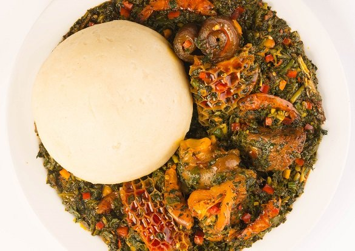

Semo Recipe

Description
Semo, also called semolina fufu, is a Nigerian swallow eaten with various soups, such as egusi soup, okro soup, efọ̀ riro, and Nigerian èfirin soup.
It is nutritious and starchy.
Ingredients
- Boiled Water
- Semovita/Semolina
- A little bit of energy
Steps
- Pour about 500ml of water into a clean pot and leave to boil on high heat.
- Take a bowl, pour a cup of Semovita in it and add some cool water into the bowl.
Use the wooden spatula to stir the water and Semovita continuously until a smooth consistency is achieved.
- When the water in the pot is boiling, reduce the heat of the stove to medium heat and then, pour the mixed Semovita into the boiling water.
- Continue stirring for 1-2 minutes and then allow to cook on low heat for about a minute.
- Stir again until the texture is consistent and then turn off the heat.
- Your Semovita should be perfect and ready to serve! Serve with any soup of your choice.
- Serve and enjoy with soup of choice